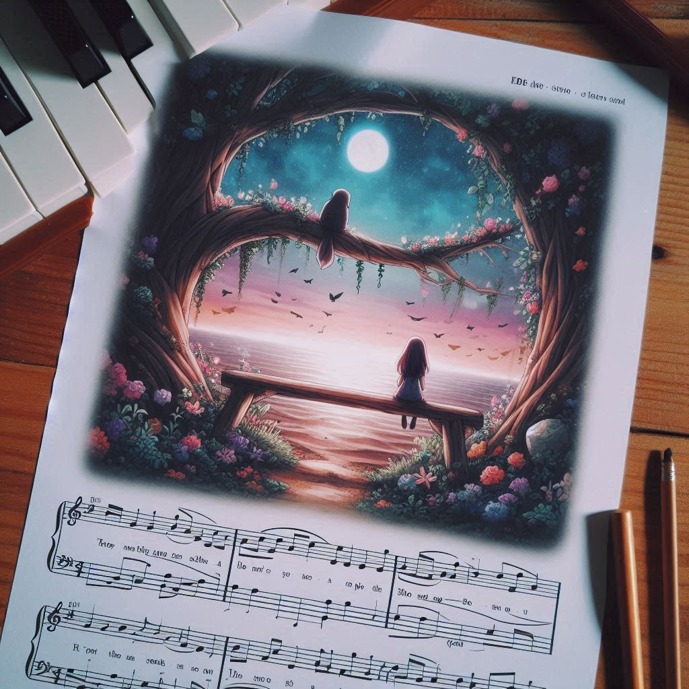

lastsong
네가 마지막으로 남긴 노래
목차
작가
이치조 미사키
출판일
2021년
감상평에 대한 AI그림
죽음이후 남아있는 사람들의 삶을 나타내서 좋았다

감상평에 대한 AI평가
책의 핵심을 잘 짚었지만, 문장이 조금 어색할 수 있어요.
예를 들어, **"죽음 이후 남겨진 사람들의 삶을 잘 담아내 감동적이었다."**
처럼 하면 더 자연스럽고 전달력이 좋아질 것 같아요!